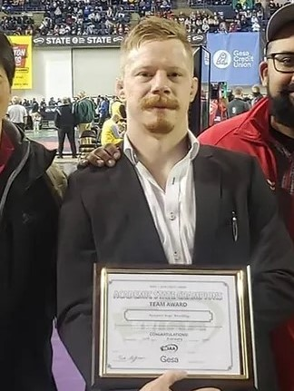

SHAUN WEISENBURGH HEAD COACH
A life-long grappler and former Newport Knight, Coach Weisenburgh has dedicated his life to the art of wrestling, and to the advancement of his athletes. After high school, Shawn spent his college career wrestling as a Thunderbird at Highline College. After college, he travelled the world, training and competing in the sport of Jiu-Jitsu (submission wrestling) before earning his black belt in 2019. Besides developing killers on the mat, Shawn hopes that his athletes take away from the sport the ability to set high goals and see them to fruition.

SONNY SHIN
ASSISTANT COACH
Sonny Shin is a 1997 Newport High School grad & has been involved with NHS Wrestling since 1993, where he wrestled under Coach Darren Sipe. Sonny has periodically come back to wrestling practices to volunteer his time. He enjoys passing on his knowledge & experiences, as well as learn from the younger wrestlers. Currently, Sonny works as an attorney. He enjoys wrestling, martial arts, & making art projects in his free time.